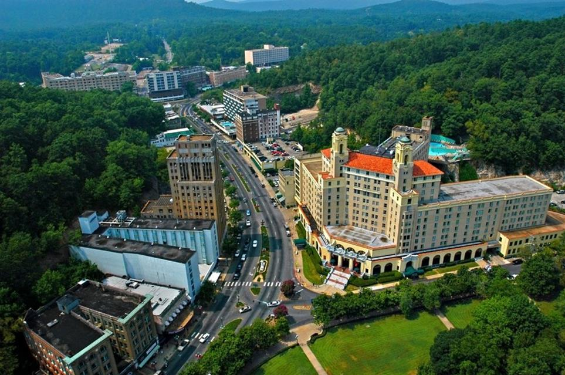

Hot Springs, AR
Home
Little Rock
Hot Springs
Bentonville
Contact
Hot Springs, AR

Things to know about Hot Springs, AR
The population of Hot Springs, AR is 38,109 according to the most recent index.
The city was incorporated January 10, 1851
Hot Springs, AR is located in the Diamond Lakes region of the scenic Ouachita Mountains in central Arkansas.
Hot Springs incorporats a blend of urban, suburban, and rural communities within its boundries.
As of 2022, Hot Springs, AR residents average a household income of 46,537.